01Contexte et objectifs
CentreCall ouvre un service Développement de quatre personnes, à intégrer à l'Active Directory existant. Chaque développeur doit accéder à son répertoire personnel et au dossier collaboratif du service, avec les droits appropriés. La mission comprend aussi l'automatisation de plusieurs tâches d'administration.
- Créer le service Développement dans Active Directory.
- Connecter automatiquement les lecteurs réseau du service.
- Sauvegarder le serveur de fichiers chaque nuit à 2 heures.
- Écrire un script de maintenance générale.
- Éteindre les postes à minuit, avec un message personnalisé.
Les tests sont réalisés sur une machine virtuelle cliente Windows 10, membre du domaine.
02Le service Développement dans Active Directory
Je crée l'unité d'organisation « dév », puis un groupe « développeur » et les quatre utilisateurs, membres de ce groupe.

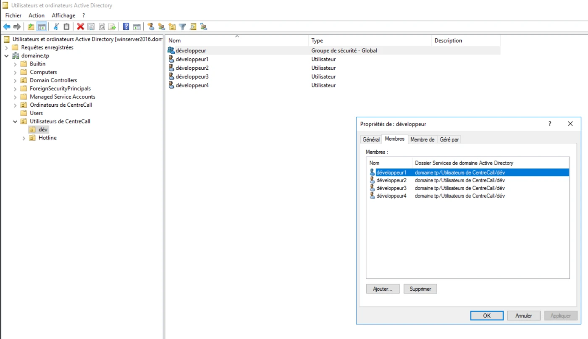
Chaque utilisateur a un dossier personnel sur le serveur, connecté sur le lecteur P:.

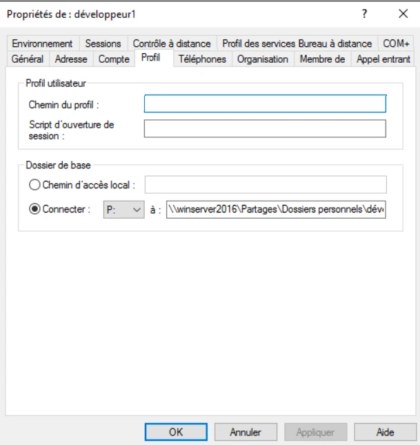
Sur son dossier, l'utilisateur a le droit de modification mais pas le contrôle total.

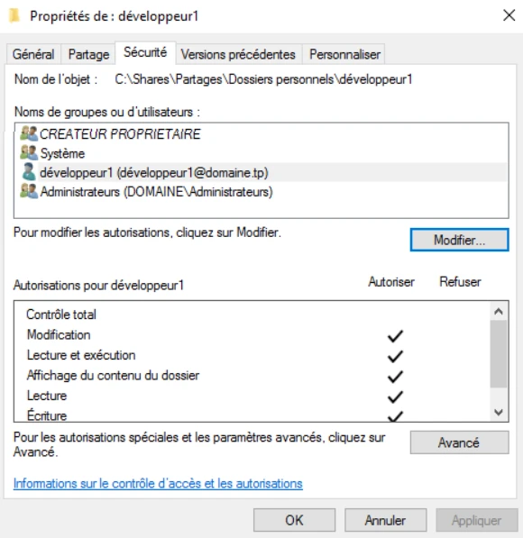
03Mappage automatique des lecteurs réseau
Une GPO liée à l'unité d'organisation du service connecte le dossier commun des développeurs à l'ouverture de session.

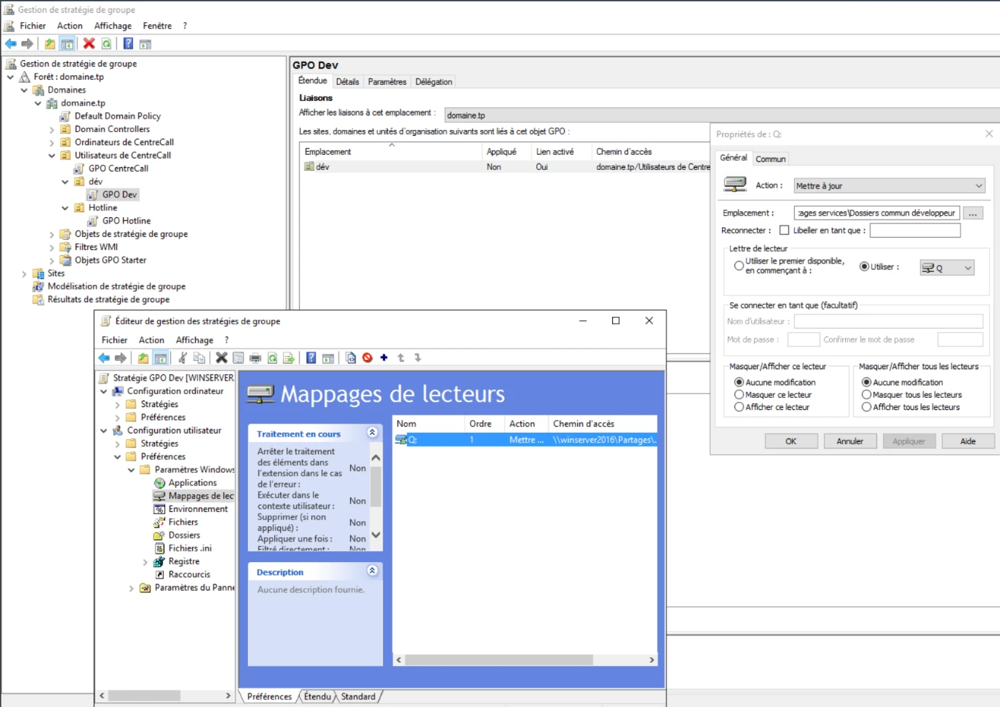
Sur le poste client, le dossier personnel et le dossier commun apparaissent bien dans l'explorateur.

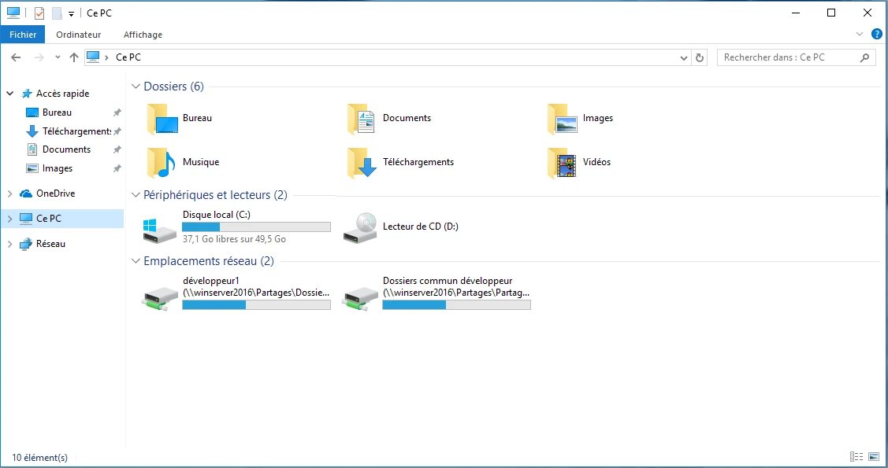
04Sauvegarde planifiée du serveur de fichiers
Une tâche planifiée lance chaque jour, à 2 heures du matin, un script qui copie les dossiers partagés vers une partition de sauvegarde.

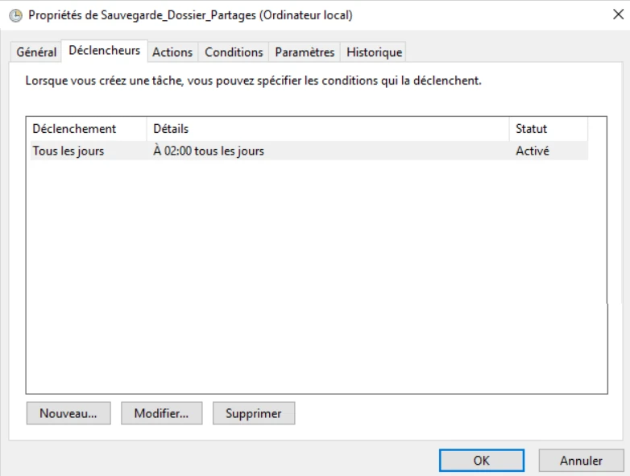

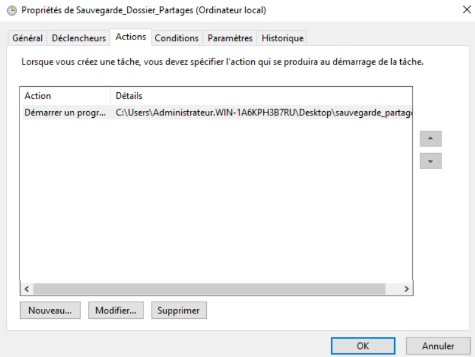

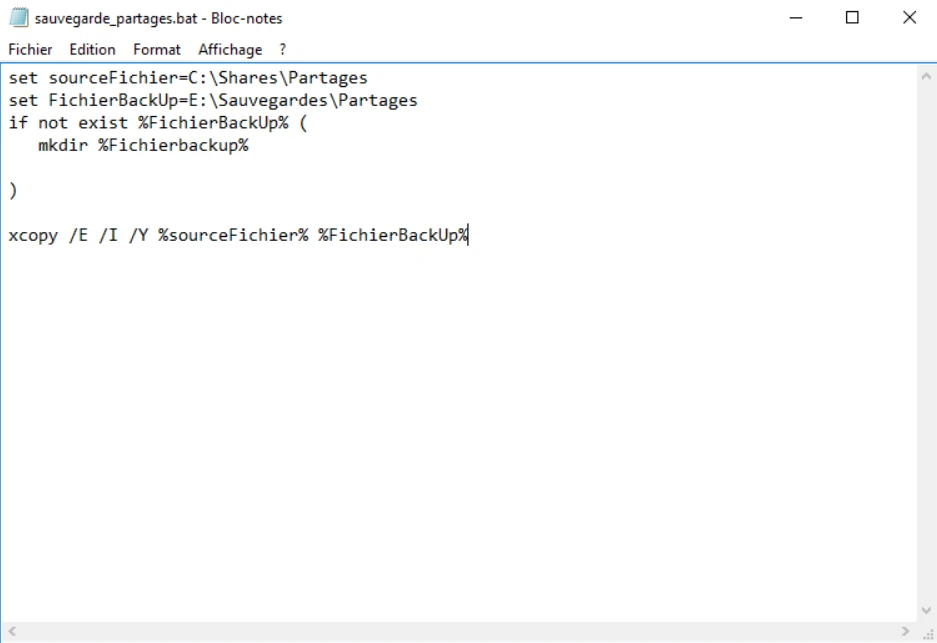
05Script de maintenance
Ce script supprime les fichiers temporaires et les fichiers de plus de deux semaines du dossier Téléchargements, puis vérifie et répare le disque. Il n'est pas planifié : les administrateurs le lancent sur un poste lorsque c'est nécessaire.

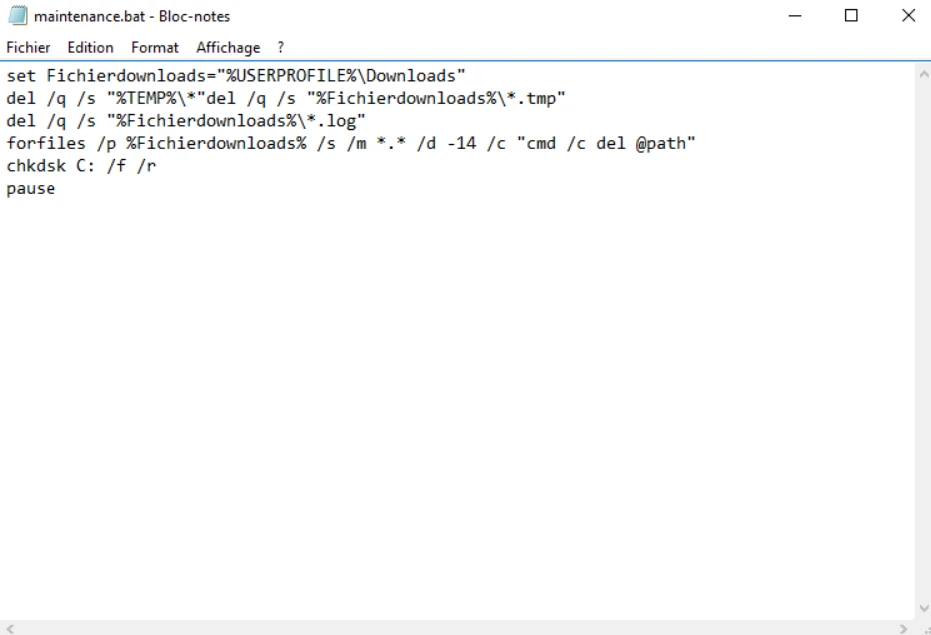
06Extinction programmée des postes
Le script d'extinction est placé dans le dossier SYSVOL, accessible à tous les ordinateurs du domaine.

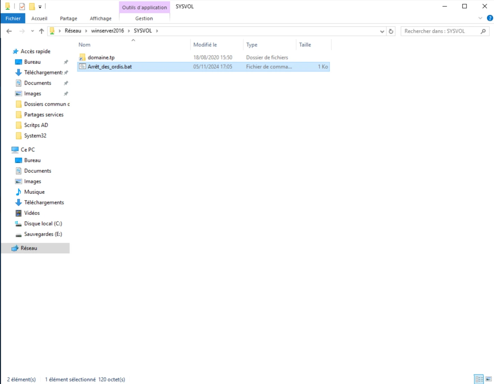
Il prévient l'utilisateur, puis éteint le poste au bout d'une minute.

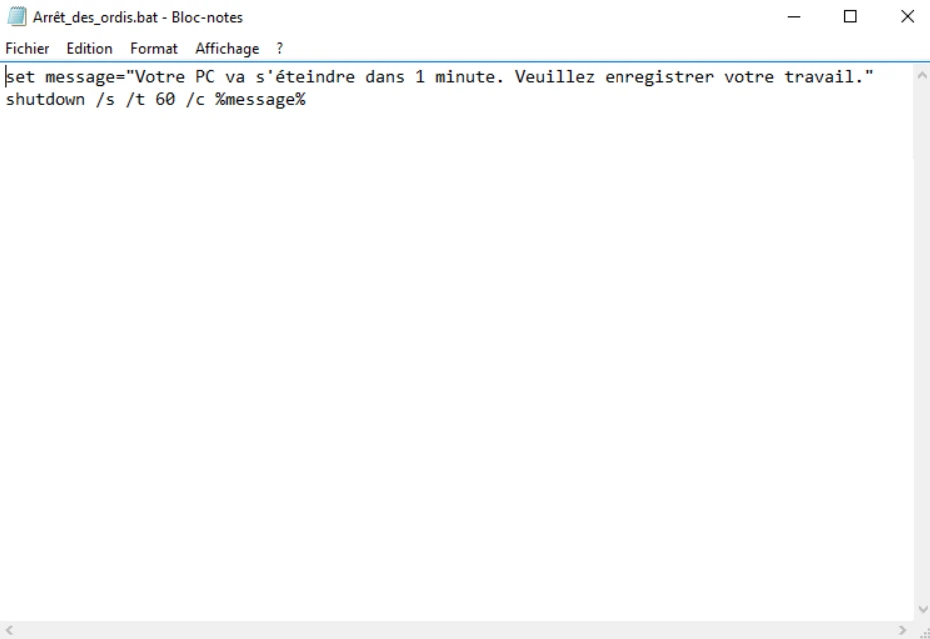
Une tâche planifiée, déployée par GPO, l'exécute tous les jours à minuit.

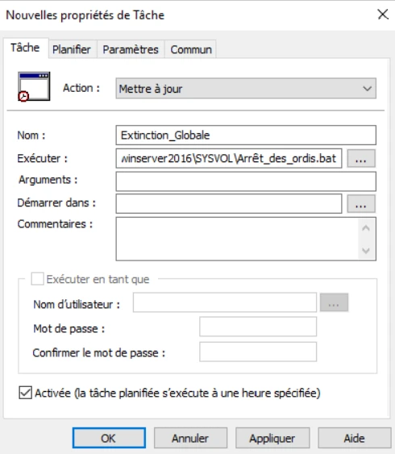

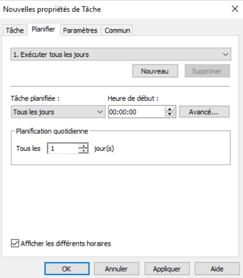